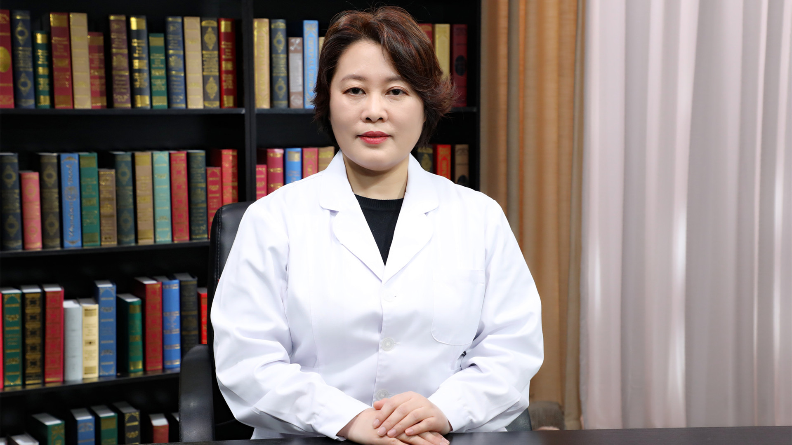

9.7 非霍奇金淋巴瘤¶
宋玉琴 主任医师¶

北京大学肿瘤医院淋巴肿瘤内科副主任 主任医师 教授 博士生导师 院长助理。
中国临床肿瘤学会（CSCO）抗淋巴瘤专家委员会秘书长；中国临床肿瘤学会（CSCO）理事；北京抗癌协会淋巴血液肿瘤专业委员会主任委员；中国人体健康科技促进会淋巴瘤专业委员会主任委员；中国老年肿瘤学会淋巴血液肿瘤专业委员会副主任委员；国家卫生健委能力建设及继续教育中心-淋巴瘤专科建设项目专家组成员及秘书。
主要成就： 先后承担国家自然科学基金青年基金和面上项目课题6项，科技部重大专项子课题、省级优秀中青年科学家基金及北京市自然基金课题等多项；发表SCI论文40余篇，主译学术专著3部。
专业特长： 从事淋巴瘤诊疗20余年，尤其是淋巴瘤新药新技术临床研究和转化医学研究，所属团队牵头大部分中国淋巴瘤新药注册研究项目，直接推动了9个创新药物上市，1个新药首次在美国成功上市。